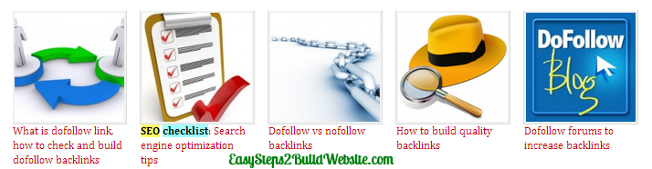

Mostly, we use plugins to display related posts thumbnails in WordPress, however it is possible to display them without using any plugin. Here, we have shared two types of code, which displays: Related posts based on tags & Related posts based on category, choose any one of them.
Output: This is how the thumbnails would like like on your site
This is how the related posts thumbnails would be shown on your website after implementing the below given codes. The below provided css has few style attributes which would give a awesome hover effects on thumbnails, as well as on titles.

Related Posts based on Tags
The below code fetches the posts based on the tags. If you have enough tags added to each of your posts/pages then this code can be a good option for you.
It checks the tags assigned to the current post and then it fetches the posts linked to those tags. We have used an orderby attribute, which would ensure that the posts would not be fetched in an any particular order. This would be useful to show different related posts on the posts assigned to the same tags.
<?php $orig_post = $post;
global $post;
$tags = wp_get_post_tags($post->ID);
if ($tags) {
$tag_ids = array();
foreach($tags as $individual_tag) $tag_ids[] = $individual_tag->term_id;
$args=array(
'tag__in' => $tag_ids,
'post__not_in' => array($post->ID),
'posts_per_page'=>5, // Number of related posts that will be displayed.
'caller_get_posts'=>1,
'orderby'=>'rand' // Randomize the posts
);
$my_query = new wp_query( $args );
if( $my_query->have_posts() ) {
echo '<div id="related_posts" class="clear"><h3>Related Posts</h3><ul>';
while( $my_query->have_posts() ) {
$my_query->the_post(); ?>
<li>
<a href="<?php the_permalink()?>" rel="bookmark" title="<?php the_title(); ?>">
<?php the_post_thumbnail( 'related-posts' ); ?>
</a>
<div class="related_content">
<a href="<? the_permalink()?>" rel="bookmark" title="<?php the_title(); ?>"><?php the_title(); ?></a>
</div>
</li>
<? }
echo '</ul></div>';
} }
$post = $orig_post;
wp_reset_query(); ?>
Related Posts based on Category
The below code uses post’s category as a criteria to fetch out the similar posts. This is really useful if each of your post belongs to at-least one category. Using this, you can ensure that all the displayed related posts would belong to the same category, this would improve the on page seo too.
<?php $orig_post = $post;
global $post;
$categories = get_the_category($post->ID);
if ($categories) {
$category_ids = array();
foreach($categories as $individual_category) $category_ids[] = $individual_category->term_id;
$args=array(
'category__in' => $category_ids,
'post__not_in' => array($post->ID),
'posts_per_page'=> 5, // Number of related posts that will be displayed.
'caller_get_posts'=>1,
'orderby'=>'rand' // Randomize the posts
);
$my_query = new wp_query( $args );
if( $my_query->have_posts() ) {
echo '<div id="related_posts" class="clear"><h3>Related Posts</h3><ul>';
while( $my_query->have_posts() ) {
$my_query->the_post(); ?>
<li>
<a href="<?php the_permalink()?>" rel="bookmark" title="<?php the_title(); ?>">
<?php the_post_thumbnail( 'related-posts' ); ?>
</a>
<div class="related_content">
<a href="<? the_permalink()?>" rel="bookmark" title="<?php the_title(); ?>"><?php the_title(); ?></a>
</div>
</li>
<? }
echo '</ul></div>';
} }
$post = $orig_post;
wp_reset_query(); ?>
How to change the number of related posts to be shown?
The above code would generate 5 related posts per post, if you want to change the number then you have to modify the code a bit. You would find a below statement in both the above codes –
'posts_per_page'=> 5
The number 5 is here is the number of posts to be displayed. Change it according to you.
Style thumbnails a bit
Here is the common CSS code for both the above algorithms. In the below CSS, I have set thumbnail’s height and width as 110px, you can change it if you want.
/*Related post without plugin*/
.custom #related_posts ul {
margin:0;
overflow:hidden;
}
.custom #related_posts li {
float: left;
list-style: none;
margin: 0 0 0 20px;
}
.custom #related_posts li:first-child {
margin-left: 0;
}
.custom #related_posts li a {
display: block;
font-size: 12px;
line-height: 16px;
text-align: left;
text-decoration:none;
width: 110px;
}
.custom #related_posts img {
border: 2px solid #DDDDDD;
height: 110px;
width: 110px;
}
.custom #related_posts li a:hover {
text-decoration: underline;
}
Let us know if you face any issue while setting up the above codes to display related posts thumbnails in WordPress.
This helped a lot. I was able to use it on my site
Thank you so much for putting this code. I will follow all the steps on my wordpress blog. It is very useful for us.
thanks for the article it’s just amazing,
I’m using html5 wordpress boiler to develop my theme
where to put the code exactly
I have one question. If post haven’t tags, we can use title of post to find related post? Can you help me it?